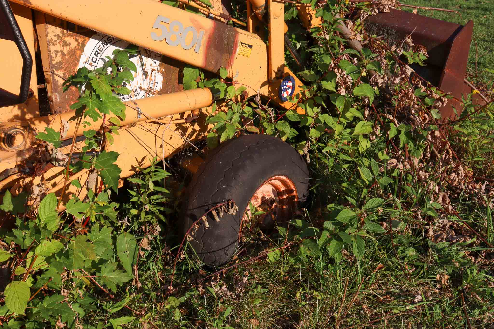
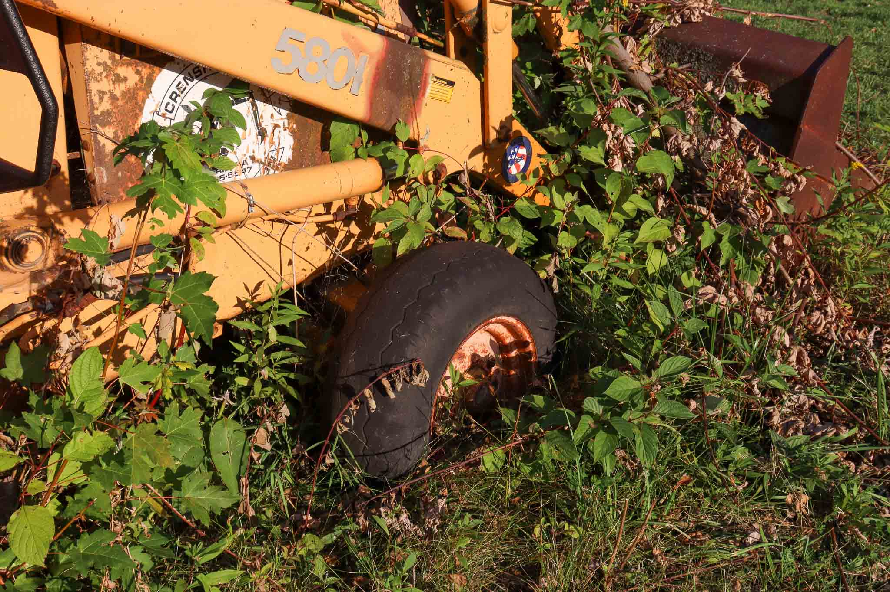

In a quiet, abandoned corner of Erie, nature has slowly begun to reclaim what was once intended for human habitation. A housing development that never materialized left behind more than just bare plots of land. Scattered across the site are remnants of human effort—tractors, a rusting car, an idle excavator, a forgotten boat, and piles of debris. Once symbols of progress, these machines have now been surrendered to the elements, left to blend into the landscape they once dominated.
As the video fades, the story unfolds through images capturing the relentless encroachment of nature upon man-made structures. Each frame tells a tale of time, neglect, and the unstoppable force of the natural world reclaiming its territory.
The beauty of this scene lies in the unexpected harmony between the natural and the industrial. Once opposing forces, they now coexist in a way that feels both inevitable and strangely balanced. What was designed to pollute and reshape the land has, in its abandonment, become part of a new ecosystem—one where nature reclaims, renews, and thrives. This slow, steady transformation is a reminder of nature’s resilience, its ability to outlast and eventually reclaim everything humanity leaves behind.


The metal of the machines, once polished and powerful, has begun to corrode, a slow surrender to the relentless autumn rains and sun. Rust spreads across their surfaces, flaking away layers of industry and purpose. Goldenrods, thriving in the fertile soil around the machinery, now grow in and around the rusted remains. These once air-polluting machines—designed to reshape and extract from the earth—have become unlikely places where plants bloom and wildlife finds new shelter. The contrast between the bright yellow blooms of the goldenrods and the deteriorating metal creates a stunning texture, a beautiful blend of nature overtaking what was once meant to conquer it.

This is not a scene of mere decay, but of quiet persistence. Left untended, the ground has come alive again. What was once a site for human development is now a testament to nature’s ability to reclaim what was lost. Saplings push through the cracks in the machinery, their roots slowly prying apart the structures built to contain them. The greens and yellows of the plants stand in sharp contrast to the dull, weathered metal that litters the area. The interplay between the remnants of human ambition and the unstoppable force of nature continues.


Nature’s reclamation is not aggressive but patient, working slowly and steadily. Grass fills the spaces between broken machines, while vines wrap themselves around rusted beams, blending the artificial with the organic. Rainwater pools in the deep indentations left by heavy equipment, nourishing the plant life that now dominates the site. Sunny days bring warmth that intensifies the growth, while rainy weather hastens the rusting of the old machines. Each passing day sees nature quietly but persistently moving forward, reclaiming more of the land. The silence here is profound, interrupted only by the sounds of nature reasserting itself.
 

In this forgotten place, the balance between nature and human progress has shifted completely. What was meant to be a housing development, a mark of human ambition, now stands as a reminder that no matter how enduring our constructions may seem, they are always temporary in the face of time and neglect. The machines, once symbols of industry and expansion, now sit idle, overcome by the very environment they were meant to control. The final remnants of industry stand as silent witnesses to nature's enduring power.